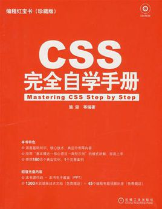

先做鞋子，再做盒。鞋子、盒子一样大，用内填充来膨胀
文字多的可以设置滚动条，还可以对盒子加阴影，使其美观
先做盒，在做鞋子。盒子材料大小固定，包括内部鞋子与盒之间空隙也计算在内，鞋子大小也固定
《CSS完全自学手册(珍藏版)》从CSS 2入手，对CSS技术进行了由浅入深的讨论。《CSS完全自学手册(珍藏版)》循序渐进，首先介绍了一些HTML和CSS的基本概念，然后对网页中常见的标签如何利用CSS进行了详细介绍。接下来介绍了利用CSS进行网页布局和排版以及利用Dreamweaver进行CSS编辑设计的步骤，分析了一个国外专业相册的样式设计。《CSS完全自学手册(珍藏版)》还讲述了JavaScript技术与CSS的关系，最终展望了CSS 3的一些新增功能。《CSS完全自学手册(珍藏版)》详尽地介绍了CSS技术的特点和实现方法，同时，《CSS完全自学手册(珍藏版)》并不满足于只介绍CSS各种具体的样式规则写法，因为具体实现是为该项技术产生的目的、需求所服务的。因此，《CSS完全自学手册(珍藏版)》在组织与取材方面尽量多地介绍了一些与CSS相关的IT背景知识，让读者能够全面地了解CSS技术的来龙去脉、优势与不足，树立一些正确的网站开发观念，并建立计算机知识的相互联系，形成网络。通过对《CSS完全自学手册(珍藏版)》的学习，任何想要使用CSS进行网站开发的人员或者想要一窥CSS面貌的玩家都能有所获益。
第1个
第2个
第3个
第1个
第2个
第3个